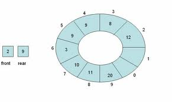
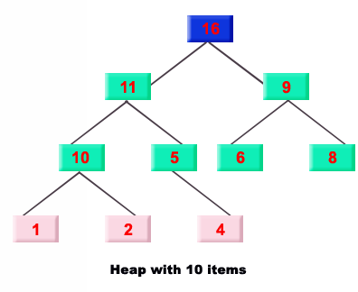
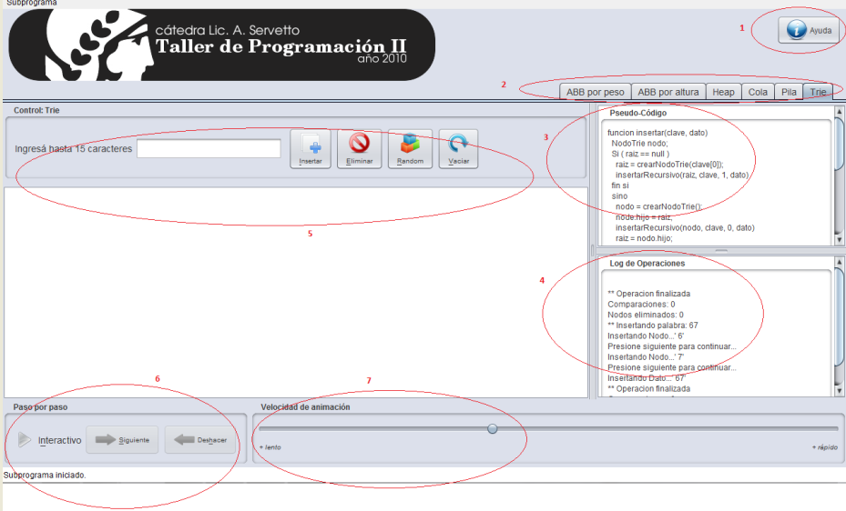

Introducción
Una estructura de datos es una forma de organizar un conjunto de datos elementales con el objetivo de facilitar su manipulación. Define la organización, interrelación y conjunto de operaciones sobre datos elementales, siendo un dato elemental la mínima información que se tiene en un sistema. Las operaciones básicas son:
- Alta, agregar un nuevo elemento a la estructura.
- Baja, borrar un elemento de la estructura.
- Búsqueda, encontrar un determinado elemento en la estructura para realizar una operación
Esta aplicación interactiva intenta mostrar de modo didáctico el funcionamiento de distintas estructuras tales como: pilas, colas, heap, trie, árboles balanceados por peso y altura. En cada animación es posible ver no solo la disposición de cada una de ellas, sino también el pseudocódigo invocado ante una operación. También es posible asignar un tamaño máximo de elementos de modo de estudiar un conjunto reducido de valores. A continuación se detallan cada una de las estructuras de estudio en este trabajo práctico y el modo en que la aplicación demuestra los cambios ocurridos, ante una operación.
Estructuras de datos
- Pila
- Cola
- Heap
- Trie
- Introducción árbol balanceado
- Árbol binario balanceado por altura
- Árbol binario balanceado por peso
- Panel de control interactivo
Pila
Una pila es una estructura de datos basada en LIFO, es decir, el último elemento en ingresar a la pila es el primero en salir. Este elemento es conocido como tope, y solo se permite hacer operaciones sobre este. Esta estructura es quizá la más fundamental de todas las estructuras usadas. La misma, ha sido adaptada para almacenar desde un simple número hasta tipos de datos definidos por el usuario. La implementación de las pilas requieren staisfacer las siguientes condiciones:
- No se pueden desapilar elementos de una pila vacía
- El acceso a cualquier elemento no está permitido - Solo el elemento "tope" puede ser leído o desapilado
- Agregar un nuevo elemento a la pila, implica que este solo puede ser agregado en el tope de la misma
- Vaciar() - Destruye todo el contenido de la pila, dejandola vacía
- Apilar() [Push()] - Agrega un nuevo elemento al tope de la pila
- Desapilar() [Pop()]- Remueve el elemento tope de la pila y lo retorna al usuario
- Tope() - Retorna el elemento tope de la pila al usuario, sin modificar la estructura
- EstaVacia() - Retorna verdadero si la pila esta vacía, de lo contrario retorna falso

Funcionalidad provista por la aplicación
- Vaciar
- Apilar
- Desapilar
- Random - Agrega un valor aleatorio al tope de la pila
- Tamaño máximo - Establece una capacidad límite a la pila
Cola
Una cola es una estructura de datos basada en FIFO, es decir, el primer elemento en ingresar es el primero en salir. La misma es caracterizada por ser una secuencia de elementos en la que la operación de inserción "push" o "Encolar" se realiza por un extremo y la operación de extracción "pop" o "Desencolar" por el otro. Las colas se utilizan en sistemas informáticos, transportes y operaciones de investigación (entre otros), dónde los objetos, personas o eventos son tomados como datos que se almacenan y se guardan mediante colas para su posterior procesamiento. Este tipo de estructura de datos abstracta se implementa en lenguajes orientados a objetos mediante clases, en forma de listas enlazadas. Las operaciones fundamentales de esta estructura son:
- Vaciar() - Destruye todo el contenido de la cola, dejandola vacía
- Encolar() [Push()] - Agrega un nuevo elemento a la cola
- Desencolar() [Pop()]- Remueve el primer elemento de la cola y lo retorna al usuario
- Frente() - Retorna el primer elemento de la cola al usuario, sin modificar la estructura

Funcionalidad provista por la aplicación
- Vaciar
- Encolar
- Desencolar
- Random - Agrega un valor aleatorio a la cola
- Tamaño máximo - Establece una capacidad límite a la cola
Cola circular
Una cola circular o anillo es una estructura de datos en la que los elementos están de forma circular y cada elemento tiene un sucesor y un predecesor. Los elementos pueden cosultarse, añadirse y eliminarse unicamente desde la cabeza del anillo que es una posición distinguida. Existen dos operaciones de rotaciones, una en cada sentido, de manera que la cabeza del anillo pasa a ser el elemento sucesor, o el predecesor, respectivamente, de la cabeza actual.
Heap
Un heap es una estructura de árbol con información perteneciente a un conjunto ordenado. El heap tiene la característica de que cada nodo padre tiene un valor mayor ó menor que el de todos sus nodos hijos. Un árbol cumple la condición de heap si satisface dicha condición y además es un árbol binario completo. Un árbol binario es completo cuando todos los niveles están llenos, con la excepción del último que puede quedar exento de dicho cumplimiento, pudiendo faltar los nodos a la derecha a partir de uno determinado. Si bien se puede utilizar un árbol binario para representar un heap, la condición de árbol completo permite representar fácilmente un heap en un vector colocando los elementos por niveles y en cada nivel, los elementos de izquierda a derecha. El nodo raíz se almacena en la primera posición del vector. Siempre se puede calcular la posición de los hijos o la del padre a partir de la posición de un nodo en el arreglo (contando las posiciones del arreglo a partir de cero):
El nodo raíz se almacena en la posición 0 del arreglo.
Los hijos de un nodo almacenado en la posición k se almacenan en las posiciones 2k+1 y 2k+2 respectivamente.

Funcionalidad provista por la aplicación
- Vaciar
- Insertar
- Eliminar
- Random - Agrega un valor aleatorio al heap
Trie
Un trie es básicamente un árbol de prefijos. Un trie posee una estructura de árbol en la que la que cada nodo (excepto la raíz) está etiquetado con un carácter (a,..,z) o una marca de fin. Además un camino de la raíz a una hoja con una marca de fin se corresponde a una palabra. Cada nodo del árbol exceptuando la raíz y las hojas corresponden a un prefijo del conjunto.
Las operaciones fundamentales de esta estructura son:- Insertar() - Inserta una clave al trie
- Eliminar() - Elimina una clave del trie
- Vaciar() - Destruye todo el contenido del trie dejandolo vacío

Funcionalidad provista por la aplicación
- Vaciar
- Insertar
- Eliminar
- Random - Agrega un valor aleatorio al trie
Introducción árbol balanceado
En esta sección se intenta dar una breve definición de términos que se van a utilizar tanto en árbol balanceado por altura como por peso. Los árboles balanceados surgen con el objeto de mejorar el rendimiento en las búsquedas. La idea central de estos es la de realizar reacomodos o balanceos después de inserciones o eliminaciones de elementos. Estos árboles también nombrados recientemente AVL en honor a sus inventores, dos matemáticos rusos Adelson-Velskii y Landis. Un árbol balanceado es un árbol binario en el cual las alturas de los dos subárboles para cada nodo nunca difieren en más de una unidad. Las características de los árboles binarios de búsqueda, ABB en adelante, son las siguientes:
- Cada nodo tiene a lo sumo 2 hijos
- Para todo nodo del árbol se verifica valor del subárbol izquierdo < valor del nodo < valor del subárbol derecho

Árbol binario balanceado por altura
Un ABB está Balanceado por Altura cuando para cada uno de sus nodos ocurre que las alturas de sus dos subarboles difieren a lo sumo en K (parámetro entero no nulo).
Para el caso particular en que K vale 1, a este árbol se lo llama Árbol AVL (por sus autores Adel'son-Vels'ki y Landis).
Gracias a este balanceo, se cumple que la altura total del arbol [h(n)] con n nodos está acotada por:
log2(n+1) ≤ h(n) ≤ 1.44042 * log2(n+2) - 0.33772
Es decir, la altura total es O(log(n)).
Funcionalidad provista por la aplicación
- Vaciar
- Insertar
- Eliminar
- Random - Agrega un valor aleatorio al árbol
- Recorrido - Permite seleccionar el tipo de recorrido, post-orden, in-orden, pre-orden
- Recorrer - Luego de seleccionar el tipo de recorrido muestra el mismo en modo animación
Árbol binario balanceado por peso
Un ABB está Balanceado por Peso cuando para cada uno de sus nodos ocurre que el balance p(t) está acotado por:
[a, 1-a], con a tal que 0 ≤ a ≤ 1/2.
El balance del nodo t, p(t), se define como:
p(t) = cant_nodos en t_izquierdo / cant_nodos en t
Para esta implementacion, el parámetro a vale 1/3.
Se cumple que la altura total del arbol [h(n)] con n nodos está acotada por:
log2(n+1) ≤ h(n) ≤ log2(n)/log2(1 - a)
Es decir, la altura total es O(log(n)).
Panel de control interactivo
La aplicación cuenta con distintos paneles que proporcionan cierta información de las estructuras o proveen funcionalidad para realizar algunas de las operaciones detalladas en en cada una de las estructuras. A continuación se detallan los mismos.

- 1) Botón de ayuda, despliega una ventana con una explicación de las estructuras que contempla la aplicación
- 2) Tabs de estructuras, al seleccionar un tab correspondiente a una estructura, se habilita el panel de botones para realizar operaciones de la estructura elegida
- 3) Panel de pseudocódigo, se muestra el pseudocódigo ejecutado al realizar una operación
- 4) Log de operaciones, se muestra una descripción de lo sucedido al ejecutar una operación
- 5) Panel de botoneras, Permite ingresar el valor a insertar a la estructura y realizar las distintas operaciones previamente detalladas según la estructura correspondiente
- 6) Panel interactivo, Permite seleccionar el modo interactivo y poder realizar operaciones paso por paso
- 7) Velocidad de animación, permite cambiar la veloacidad de la animación de las operaciones